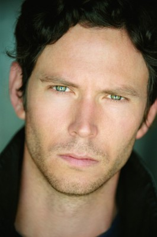

#4011 Das Verschwinden der Eleanor Rigby
Alternativ: The Disappearance of Eleanor Rigby: Them

 IMDB-Wertung: 6.3 / 10
IMDB-Wertung: 6.3 / 10  Metascore: 0
Metascore: 0 
Jede Liebe schreibt ihre eigene Geschichte. So auch die von Eleanor und Connor ; eine Liebe, dazu geschaffen, kleine und große Katastrophen des Alltags zu überdauern. Bis zu dem Tag, als ihre Beziehung unerwartet auf eine harte Probe gestellt wird. Einstmals ein Traumpaar, reagieren beide vollkommen unterschiedlich auf das drohende Auseinanderbrechen ihres Glücks: Eleanor zieht sich immer mehr zurück, bis sie schließlich ganz verschwindet. Zurück bleibt ein verzweifelter Connor, der die Scherben ihrer Ehe aufzusammeln versucht. Von ihren Freunden und Familien gedrängt und von der eigenen Rat- und Rastlosigkeit getrieben folgen beide neuen Lebensentwürfen, um schlussendlich zu erkennen, dass das Schicksal für ihre Liebesgeschichte ein anderes Ende bereithält als erwartet.
Jahr: 2014
Dauer: 117 Minuten
FSK: 6
Land: USA Studio: Weinstein Company, TheTonspuren: DD5.1 - ,
Untertitel:
Auflösung: 1080p (1920x808) Größe: 8376 MB
Genre: Drama
Regisseur: Ned Benson
Drehbuch: Mort Briskin
Soundtrack:
Darsteller:
 James McAvoy als Conor Ludlow
James McAvoy als Conor Ludlow Jessica Chastain als Eleanor Rigby
Jessica Chastain als Eleanor Rigby Nina Arianda als Alexis
Nina Arianda als Alexis Viola Davis als Professor Friedman
Viola Davis als Professor Friedman Bill Hader als Stuart
Bill Hader als Stuart Ciarán Hinds als Spencer Ludlow
Ciarán Hinds als Spencer Ludlow Isabelle Huppert als Mary Rigby
Isabelle Huppert als Mary Rigby William Hurt als Julian Rigby
William Hurt als Julian Rigby Jess Weixler als Katy Rigby
Jess Weixler als Katy Rigby- Nikki M. James als Sia
 Jeremy Shamos als Evangelist
Jeremy Shamos als Evangelist- Wyatt Ralff als Philip
- Daron Stewart als Guy Walking on Bridge
- Julee Cerda als Nurse
- Sasha Eden als Coffee Truck Barista
- Johnathan Fernandez als Bar Fight Guy
- Justine Salata als Bar Fight Girl
- Musto Pelinkovicci als Ukrainian Cabbie
- Rafael Feldman als Paramedic
 Jimmy Palumbo als Rental Car Attendant
Jimmy Palumbo als Rental Car Attendant-  Will Beinbrink als Gary the Dentist
 Ryan Eggold als Guy from Club
Ryan Eggold als Guy from Club Marta Milans als Phoebe
Marta Milans als Phoebe- Maxfield Lund als Analytical Guy , uncredited
- Brendan Donaldson als Casimir Waiter
- June Miller als Elderly Woman
- Lawrence Cioppa als Elderly Man
- Michael T. King als Paramedic
- Bryon Krueger als NYU Student , uncredited
Datei: X:\2014(N-Z)\Verschwinden der Eleanor Rigby, Das (2014, FSK6, 1920x808).mkv seit 11.07.2016
Festplatte: HD 2013(I-Z)-2014(A-Z)
 Es gibt insgesamt 163 Filme in der Gruppe '2014(N-Z)'
Es gibt insgesamt 163 Filme in der Gruppe '2014(N-Z)'